SeekSpace| 会单细胞就会空间转录组
原文：https://mp.weixin.qq.com/s?__biz=MzAwMzIzOTk5OQ==&mid=2247511779&idx=1&sn=23868525d86a9ed7867a3837ed18612c&chksm=9b3cd7b3ac4b5ea502950d0278d68da978f6011b2597c3ec90fb77e79320883fb4a5be2d5399#rd 合集：单细胞教程全收录
SeekSpace基础分析

测试数据下载见文末
一、基础分析
1.1 背景介绍
关于SeekSpace的详细介绍可参考当空转遇上单细胞~
原理流程图如下：
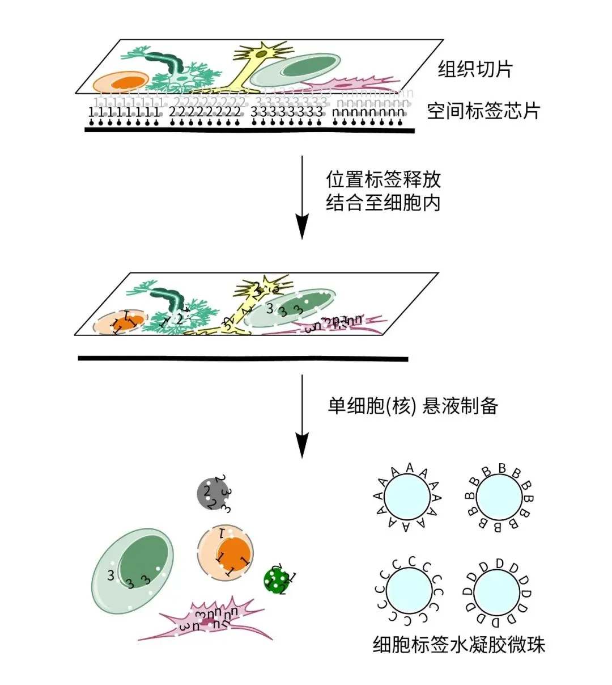
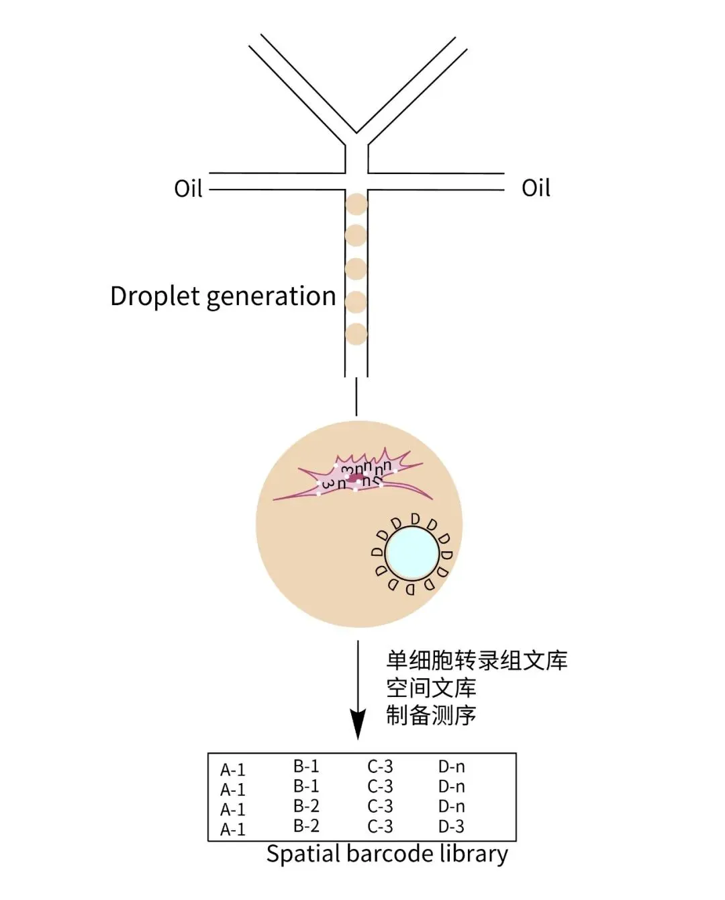
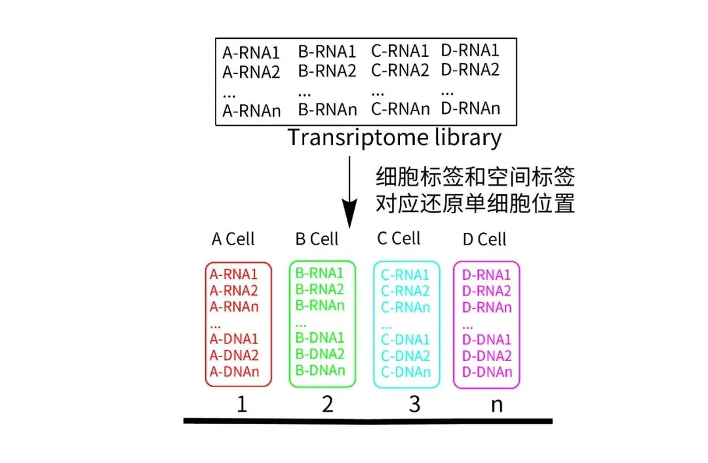
简而言之，不同于我们以往介绍的空转建库策略，SeekSpace利用的其实是一种反向渗透的原理，通过芯片上标记序列的释放向细胞核内做透化，这样带有标记序列的细胞核可以进一步参与后续的单细胞水平建库。换言之，大家最后拿到的是一套结构近似于单细胞测序的数据。这样更能够无缝的衔接到我们此前的单细胞教程中二十万+播放量的单细胞教程，可以直接在Seurat、Scanpy等大家常用的单细胞工具中分析SeekSpace平台的数据。
1.2 基础分析
1.2.1 文件说明
本数据为基于SeekSpace技术的⼩⿏（8周龄）脑的空间数据。数据中包含9,333个细胞的单细胞转录组矩阵，空间坐标矩阵和组织DAPI染⾊图⽚。
本文的输入数据结构如下： ├── filtered_feature_bc_matrix # 表达矩阵⽬录，可以使⽤seurat的Read10X命令进⾏读取 │ ├── barcodes.tsv.gz │ ├── features.tsv.gz │ └── matrix.mtx.gz ├── mouse_brain_aligned_cropped.png # 为⼩⿏脑组织切⽚的DAPI染⾊图⽚ ├── seurat.ipynb # 为使⽤seurat分析该⼩⿏脑空间数据的jupyter示例⽂件 └── spatial_matrix.csv # 为⼩⿏脑测序数据中细胞的空间坐标⽂件。第1列是barcode，顺序与
matrix中的filtered_feature_bc_matrix/barcode中细胞的顺序⼀致；第2列和第3列分别为该barcode所代表的细胞的空间位置（即空间芯⽚上的像素坐标）。 SeekSpace技术中一个像素点的大小是约为 0.2653 微米，将像素点的坐标乘以 0.2653 即可转换计算细胞在真实空间上的距离。
1.2.2 读入数据并创建对象
这⾥以seurat软件为例，来介绍SeekSpace数据的分析。 具体步骤如下： 第⼀步，读取SeekSpace的矩阵⽂件，并聚类。 （这⾥的代码可以根据⾃⼰的⽬的进⾏修改，只要是符合seurat分析单细胞转录组的要求即可。）
这里我们用到的Seurat主是V4。
# 如果你安装的版本不是Seurat V4，可以用以下代码重装
remove.packages("SeuratObject")
remove.packages("Seurat")
packageurl <- "https://cran.r-project.org/src/contrib/Archive/SeuratObject/SeuratObject_4.1.4.tar.gz"
install.packages(packageurl, repos=NULL, type="source")
packageurl <- "https://cran.r-project.org/src/contrib/Archive/Seurat/Seurat_4.4.0.tar.gz"
install.packages(packageurl, repos=NULL, type="source")
# 加载R包
library(Seurat)
library(dplyr)
library(base64enc)
# 读入矩阵：
mouse_brain.data <- Read10X('./mouse_brain_demo/filtered_feature_bc_matrix')
# 创建对象：
mouse_brain <- CreateSeuratObject(counts=mouse_brain.data,project='mouse_brain')
# 查看对象：
mouse_brain
## An object of class Seurat
## 32285 features across 9333 samples within 1 assay
## Active assay: RNA (32285 features, 0 variable features)
如上，数据已经被读入并构建为一个Seurat对象
1.2.3 预处理与聚类
这部分内容与单细胞部分完全一致，看不懂得小伙伴可以参考视频单样本分析
# 标准化：
mouse_brain <- NormalizeData(mouse_brain, normalization.method = "LogNormalize", scale.factor = 10000) %>%
# 计算高变基因：
FindVariableFeatures(selection.method = "vst", nfeatures = 2000) %>%
# 归一化数据：
ScaleData() %>%
# PCA分析：
RunPCA() %>%
# 构建邻接图：
FindNeighbors(dims = 1:30) %>%
# 分群：
FindClusters(resolution = 0.8) %>%
# UMAP降维
RunUMAP(dims = 1:30)
## Centering and scaling data matrix
## PC_ 1
## Positive: Trf, Mbp, Cnp, Mobp, Mag, Apod, Ptgds, Plp1, Mog, Apoe
## Cmtm5, Mal, Ppp1r14a, Phldb1, Tspan2, Ttyh2, Cldn11, Fa2h, Pllp, Bcas1
## Prr5l, Gab1, St18, Pltp, Opalin, Atp1a2, Sparc, Plekhh1, Rhog, Tmem63a
## Negative: Celf2, Csmd1, Rbfox1, Grin2b, Grin2a, Dlgap2, Rbfox3, Kalrn, Syt1, Erc2
## Opcml, Phactr1, Kcnip4, Nrxn3, Atp2b2, Prkce, Arpp21, Nrg1, Kcnma1, Ryr2
## Dlgap1, Slit3, Nav3, Kcnq5, Asic2, Fam155a, Cadm2, Nrgn, Dab1, Prkcb
## PC_ 2
## Positive: Gabbr2, Pde4d, Dscam, Dpp10, Car10, Mast4, Slc17a7, Ncald, Kcnj6, Ppm1e
## Rgs6, Dlgap1, Sez6l, Mical2, Oxr1, Nav3, Tcf4, Khdrbs3, Zbtb16, Slc8a1
## Sox5, Tmem108, Cck, Kcnh7, Fam155a, Fhod3, Ptpn3, Tmem132d, Srrm4, Ptprd
## Negative: Rgs9, Ppp1r1b, Gng7, Adcy5, Rarb, Syndig1l, Pde1b, Drd2, Scn4b, Meis2
## Bcl11b, Adora2a, Pde10a, Sh3rf2, Rasd2, Actn2, Lrrc10b, Gm10754, Pde7b, Gnal
## Drd1, Caln1, Ryr3, Dgkb, Cpne5, Gprin3, Cacnb2, Kcnab1, Penk, Phactr1
## PC_ 3
## Positive: Pltp, Igf2, Dpp6, Prelp, Zbtb20, Msx1, Nxn, Pitpnc1, Gm26917, Rarres2
## Lef1, Msi2, Folr1, Rbms3, Bmp6, Drc7, Trpm3, Zfhx3, Maml2, Lbp
## Aebp1, Pcp4l1, Ebf1, 9530026P05Rik, Dnah6, Ror1, Cacna1c, Flt1, Ptprm, Utrn
## Negative: Nrgn, Slc17a7, Dpp10, Ptprd, Satb2, Ttc9b, Mag, Tmem132d, Cabp1, Kcnh7
## Mog, Trf, Mbp, Mef2c, Hs3st2, Vxn, Mical2, Plp1, Mobp, Cnp
## Lingo1, Pdzrn3, Cck, Camk2a, Khdrbs3, Pex5l, 9130024F11Rik, Sv2b, Fa2h, Slc24a2
## PC_ 4
## Positive: Ntng1, Synpo2, Inpp4b, Zfhx3, Dpp6, Tcf7l2, Robo1, Btbd11, Kcnc2, Nxph1
## Cpne7, Grip1, Cit, Plekhg1, Vav3, Ccdc136, Grid2ip, Hdac9, Tmem132c, Lhfpl3
## Col25a1, Rnf220, Zfp423, Shisal1, Cntnap2, Frmd4a, Grin2d, Rbms3, Fam155a, Zmat4
## Negative: Nrgn, Phactr1, Pltp, Slc17a7, Cplx2, Lmo4, Camk2a, Hpca, 2010300C02Rik, Kcnh1
## Flt1, Ryr2, Igf2, Cldn5, Cabp1, Ankrd33b, Cnksr2, Vtn, Mef2c, Sptbn2
## Neurod2, Dlgap2, Satb2, Atp1a1, Clu, Ttc9b, Eng, Apoe, Tcf4, Pdzrn3
## PC_ 5
## Positive: Flt1, Cldn5, Vtn, Mecom, Eng, Ptprb, Rgs5, Pltp, Lef1, Ly6c1
## Itga1, Pecam1, Cit, Bsg, Epas1, Adgrl4, Fli1, Ly6a, Adgrf5, Igfbp7
## Rbpms, Pdgfrb, Itih5, Atp10a, Vwf, Atp13a5, Myl9, Slco1c1, Paqr5, Utrn
## Negative: Mag, Trf, Cnp, Mog, St18, Fa2h, Plp1, Tmeff2, Phldb1, Plcl1
## Pde4b, Tspan2, Dock10, Mal, Cldn11, Zfp536, Prr5l, Dscaml1, Ptgds, Gm16168
## Pllp, Myrf, Bcas1, Slc24a2, Apod, Plekhh1, Nfasc, Sox2ot, Opalin, Cmtm5
## Computing nearest neighbor graph
## Computing SNN
## Modularity Optimizer version 1.3.0 by Ludo Waltman and Nees Jan van Eck
##
## Number of nodes: 9333
## Number of edges: 359011
##
## Running Louvain algorithm...
## Maximum modularity in 10 random starts: 0.8997
## Number of communities: 23
## Elapsed time: 2 seconds
## Warning: The default method for RunUMAP has changed from calling Python UMAP via reticulate to the R-native UWOT using the cosine metric
## To use Python UMAP via reticulate, set umap.method to 'umap-learn' and metric to 'correlation'
## This message will be shown once per session
## 12:14:52 UMAP embedding parameters a = 0.9922 b = 1.112
## 12:14:52 Read 9333 rows and found 30 numeric columns
## 12:14:52 Using Annoy for neighbor search, n_neighbors = 30
## 12:14:52 Building Annoy index with metric = cosine, n_trees = 50
## 0% 10 20 30 40 50 60 70 80 90 100%
## [----|----|----|----|----|----|----|----|----|----|
## **************************************************|
## 12:14:54 Writing NN index file to temp file /tmp/RtmpjwQWK4/file1fd74c21f3942c
## 12:14:54 Searching Annoy index using 1 thread, search_k = 3000
## 12:14:57 Annoy recall = 100%
## 12:14:58 Commencing smooth kNN distance calibration using 1 thread with target n_neighbors = 30
## 12:14:59 Initializing from normalized Laplacian + noise (using irlba)
## 12:15:00 Commencing optimization for 500 epochs, with 412654 positive edges
## 12:15:18 Optimization finished
查看当前的分群情况：
DimPlot(mouse_brain)
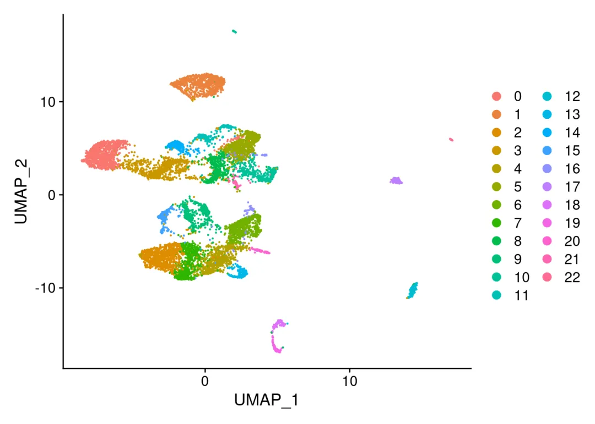
# 这里就和单细胞没差别啦：
1.3 注释信息添加
SeekSpace细胞注释的过程，跟普通的单细胞注释的过程完全一致。我们之前已经对demo数据进行了大群和亚群的注释，注释的结果文件放在了anntation.csv文件中。注释信息的管理可以参考Seurat中分类变量处理技巧。接下来我们来读入演示一下。
# 读入注释数据:
anno <- read.csv("./mouse_brain_demo/annotation.csv",
row.names = 1,header = TRUE)
rownames(anno) <- anno$cell_bc
# 查看注释数据:
head(anno)
## cell_bc Main.CellType subcluster
## AAACCCATACATAGTGT AAACCCATACATAGTGT Oligo Oligo_2
## AAACCCATACCGCTTCG AAACCCATACCGCTTCG Ext Ext_L56
## AAACCCATACGCTCTAT AAACCCATACGCTCTAT Ext Ext_L23
## AAACCCATACTCATAGA AAACCCATACTCATAGA Ext Ext_L56
## AAACCCATACAAGCCTG AAACCCATACAAGCCTG Ext Ext_L5_2
## AAACCCATACATTCGAA AAACCCATACATTCGAA Ext Ext_L56
# 将注释信息添加到mouse_brain@meta.data中：
mouse_brain <- AddMetaData(mouse_brain,metadata = anno)
# 查看是否添加成功：
mouse_brain@meta.data %>% head()
## orig.ident nCount_RNA nFeature_RNA RNA_snn_res.0.8
## AAACCCATACATAGTGT mouse_brain 3185 1660 3
## AAACCCATACCGCTTCG mouse_brain 10962 3603 9
## AAACCCATACGCTCTAT mouse_brain 1695 988 2
## AAACCCATACTCATAGA mouse_brain 1303 867 6
## AAACCCATACAAGCCTG mouse_brain 16009 4551 13
## AAACCCATACATTCGAA mouse_brain 17436 4947 9
## seurat_clusters cell_bc Main.CellType subcluster
## AAACCCATACATAGTGT 3 AAACCCATACATAGTGT Oligo Oligo_2
## AAACCCATACCGCTTCG 9 AAACCCATACCGCTTCG Ext Ext_L56
## AAACCCATACGCTCTAT 2 AAACCCATACGCTCTAT Ext Ext_L23
## AAACCCATACTCATAGA 6 AAACCCATACTCATAGA Ext Ext_L56
## AAACCCATACAAGCCTG 13 AAACCCATACAAGCCTG Ext Ext_L5_2
## AAACCCATACATTCGAA 9 AAACCCATACATTCGAA Ext Ext_L56
# 可以看出ann的信息被成功添加到注释信息中：
# 用"$"也可以访问：
unique(mouse_brain$Main.CellType)
## [1] "Oligo" "Ext" "OPC" "Inh" "Astro" "Micro" "Endo" "Nb"
# 一共有八种细胞类型：
unique(mouse_brain$subcluster)
## [1] "Oligo_2" "Ext_L56" "Ext_L23" "Ext_L5_2"
## [5] "OPC_2" "Inh_6" "Ext_Unk_3" "Ext_ClauPyr"
## [9] "Inh_4" "Ext_L25" "Inh_Meis2_3" "Ext_L5_1"
## [13] "Ext_Thal_1" "Ext_Med" "Inh_Sst" "Ext_Hpc_CA2"
## [17] "Inh_Meis2_2" "Astro_THAL_med" "Inh_1" "Astro_STR"
## [21] "Inh_Pvalb" "Inh_Meis2_4" "Ext_L6B" "Micro"
## [25] "Ext_L6" "Astro_WM" "Ext_Thal_2" "Ext_Hpc_DG1"
## [29] "Inh_Lamp5" "Endo" "Oligo_1" "OPC_1"
## [33] "Ext_Hpc_CA1" "Ext_Amy_1" "Inh_2" "Inh_Vip"
## [37] "Astro_CTX" "Inh_Meis2_1" "Astro_HYPO" "Nb_1"
## [41] "Ext_L5_3" "Ext_Amy_2" "Astro_AMY" "Ext_Unk_2"
## [45] "Inh_3" "Nb_2" "Astro_THAL_lat"
# 一共有47种细胞亚型：
### 注释完的信息也可以保存到本地，供下次读取：
write.csv(mouse_brain@meta.data,'mouse_brain_demo/my_annotation.csv')
你可能想问注释信息怎么来的，可以看这里细胞类型注释
1.4 添加空间坐标
现在我们还需要把空间坐标添加到对象中这样我们就可以看不同的细胞类型在空间上的分布情况了。这里需要将细胞的空间信息添加至Seurat对象的metadata中。这一步看似是SeekSpace与单细胞数据分析方式中不同的地方，实则我们介绍过如何在Seurat对象中管理注释数据：Seurat中分类变量处理技巧。
# 读入空间矩阵：
spatial_df <- read.csv('./mouse_brain_demo/spatial_matrix.csv', row.names = 1)
# 转化为矩阵对象：
spatial_matrix <- as.matrix(spatial_df)
# 与metadata的顺序相匹配，防止出现错配：
spatial_matrix_sorted <- spatial_matrix[match(row.names(mouse_brain@meta.data),row.names(spatial_matrix)), ]
# 添加至`metadata`中，slot名称为spatial_
mouse_brain@reductions$spatial <- CreateDimReducObject(embeddings = spatial_matrix_sorted, key='spatial_', assay='RNA')
经过这步处理之后，我们可以在seurat对象中看到一个新的坐标系spatial，这个坐标系即为每个细胞在空间位置上的坐标。我们可以看一下整个对象的结构：
if(!require(tidyverse))install.packages("tidyverse")
## Loading required package: tidyverse
## ── Attaching packages ─────────────────────────────────────── tidyverse 1.3.1 ──
## ✔ ggplot2 3.3.6 ✔ purrr 1.0.2
## ✔ tibble 3.2.1 ✔ stringr 1.5.0
## ✔ tidyr 1.3.0 ✔ forcats 0.5.1
## ✔ readr 2.1.4
## ── Conflicts ────────────────────────────────────────── tidyverse_conflicts() ──
## ✖ dplyr::filter() masks stats::filter()
## ✖ dplyr::lag() masks stats::lag()
if(!require(mindr))devtools::install_github("pzhaonet/mindr")# 这个包需要先安装Rtools
## Loading required package: mindr
out2 <- str(mouse_brain) %>%
capture.output(.) %>%
gsub(
pattern = "\\.\\. ",
replacement = "#",
x = .
) %>%
gsub(
pattern = "\\.\\.@",
replacement = "# ",
x = .
) %>%
gsub(pattern="^\\s+#",replace="#")
if(!require(mindr))install.packages("mindr")
mindr::mm(
from = out2,
input_type = "markdown",
output_type = "widget",
root = "Seurat"
)
## $widget
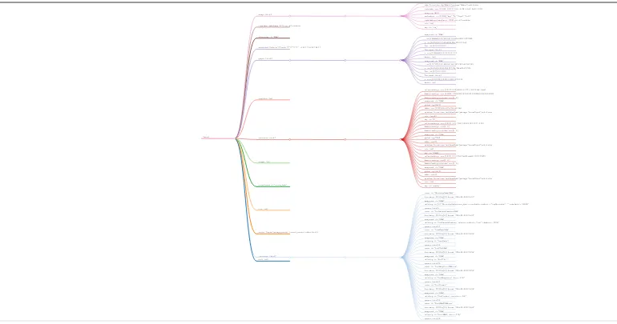
1.5 可视化
Seurat当中的很多函数可以直接对这里的对象进行可视化，这里我们先定义一些颜色，对配色感兴趣的同学可以查看这个教程自此配色烦恼不相逢——ggsci。
library(ggsci)
num_col <- c(pal_aaas()(8),pal_d3()(8),pal_igv()(8))
celltype_col <- c(pal_futurama()(8),pal_jama()(8),pal_lancet()(8))
## Warning: This manual palette can handle a maximum of 7 values. You have
## supplied 8.
sub_col <- c(pal_nejm()(8),pal_simpsons()(8),pal_npg()(8),pal_jama()(8),pal_material()(8),pal_jco()(8))
## Warning: This manual palette can handle a maximum of 7 values. You have
## supplied 8.
expr_col <- c("#483D8B","#00FFFF","#F8F8FF","#FF69B4","#8B008B")
(1)DimPlot
#简单的DimPlot
DimPlot(mouse_brain, reduction = 'umap',cols = num_col)
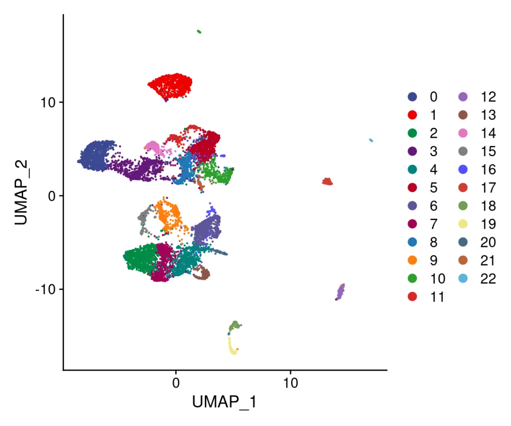
# 带有注释信息的umap：
DimPlot(mouse_brain,cols = num_col) + DimPlot(mouse_brain, group.by = "Main.CellType",cols = celltype_col)
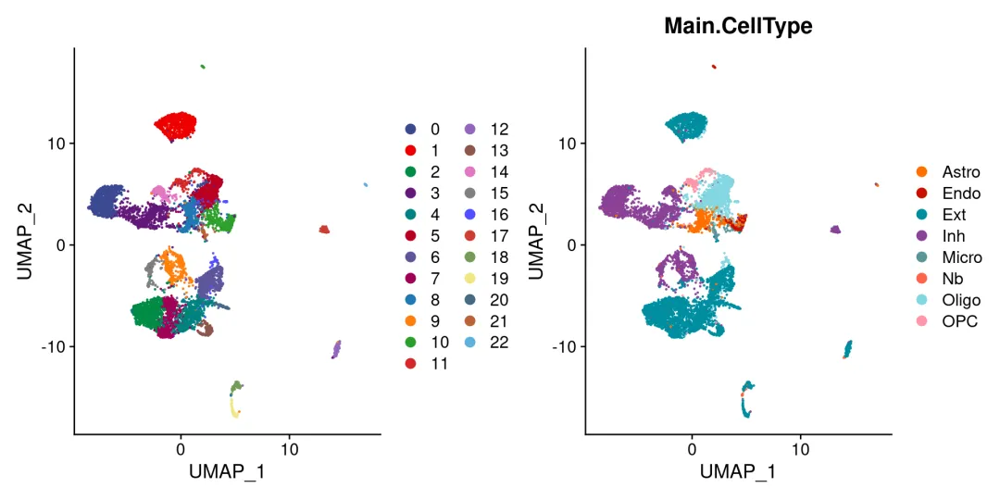
# 利用空间坐标绘制DimPlot:
DimPlot(mouse_brain, reduction = 'spatial',
pt.size = 1.5,cols = num_col)/DimPlot(mouse_brain, reduction = 'spatial',
pt.size = 1.5,cols = celltype_col,group.by = 'Main.CellType')/DimPlot(mouse_brain, reduction = 'spatial',
pt.size = 1.5,cols = sub_col,group.by = 'subcluster')
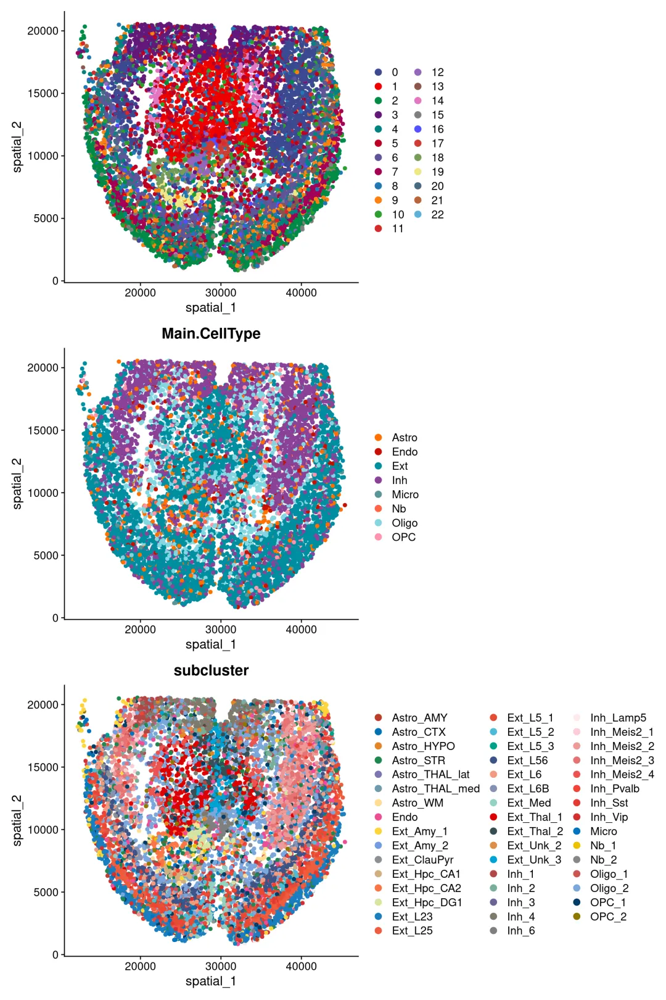
(2)FeaturePlot
FeaturePlot(mouse_brain, reduction = 'umap', features=c('Mbp','Mobp', 'Olig1','Plp1'), pt.size = 1,cols = expr_col)
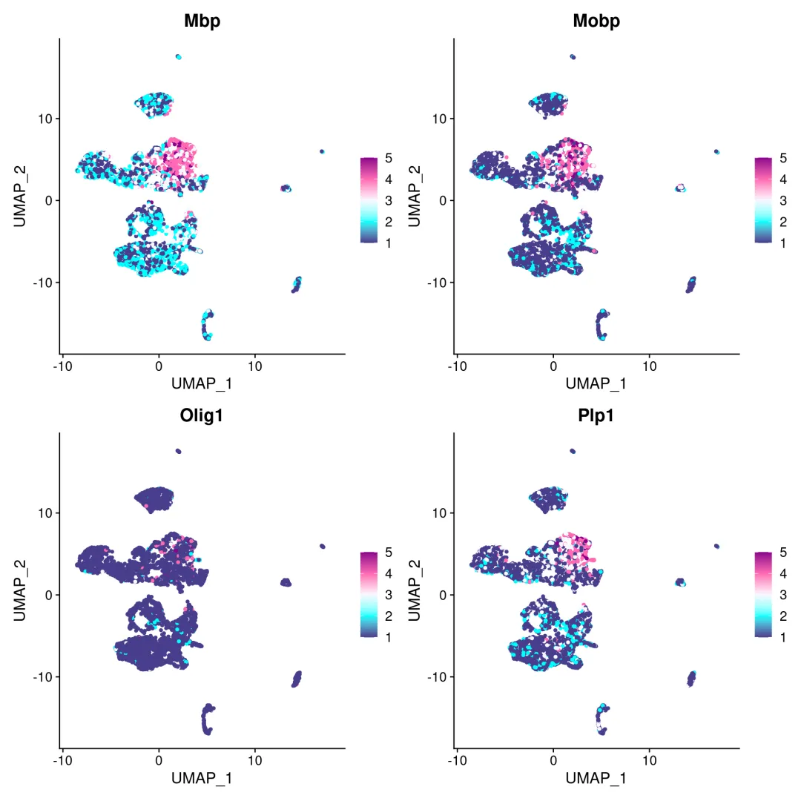
同样，我们可以在使用FeaturePlot函数时，将reduction参数设置为spatial，来查看基因在空间位置上的表达情况。
FeaturePlot(mouse_brain, reduction = 'spatial', features = c('Gad2','Hpca','Reln','Pvalb','Mbp'),pt.size = 1.5,cols = expr_col)
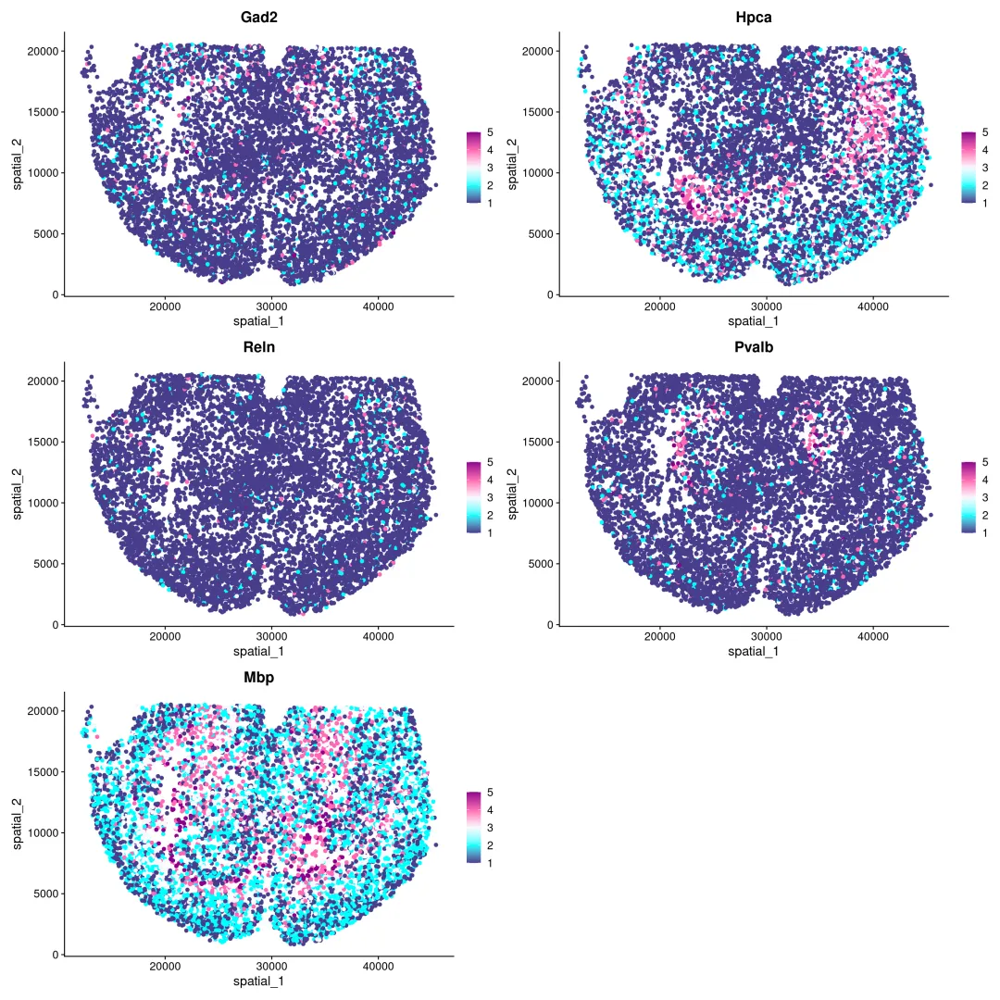
(3)带有Image信息的可视化
下面我们展示一下在空间数据上添加背景的DAPI图片。
# 图片设置：
img = './mouse_brain_demo/mouse_brain_aligned_cropped.png'
samplename = 'mouse_brain'
size_x = 50094
size_y = 20570
# 读取图片：
img_64 = base64enc::dataURI(file = img)
# 添加图片数据至Seurat对象中：
mouse_brain@misc$info[[`samplename`]]$img = img_64
# x方向上的体素极值
mouse_brain@misc$info[[`samplename`]]$size_x = as.integer(size_x)
# y方向上的体素极值
mouse_brain@misc$info[[`samplename`]]$size_y = as.integer(size_y)
创建绘图函数：
library(plotly)
##
## Attaching package: 'plotly'
## The following object is masked from 'package:ggplot2':
##
## last_plot
## The following object is masked from 'package:stats':
##
## filter
## The following object is masked from 'package:graphics':
##
## layout
# 添加染色图片
# Here, I would like to thank the generous Dr. Zhou Ran.
addBgImage <- function(p, obj, size_x, size_y, base64) {
p_plotly <- ggplotly(p)
my_layout <- list(
xaxis = list(
range = c(0,size_x),
scaleanchor = 'y',
scaleratio = 1,
tickcolor = 'gray',
showgrid = FALSE,
visible= FALSE
),
yaxis = list(
range = c(0,size_y),
ticks = 'outside',
showgrid = FALSE,
visible= FALSE
),
width = 1000,
height = 600,
images = list(
list(
source = base64,
xref = "x",
yref = "y",
sizing = 'stretch',
layer = "below",
x = 0,
y = size_y,
sizex = size_x,
sizey = size_y
)
)
)
p_plotly$x$layout <- my_layout
return (p_plotly)
}
出图！
p1 = DimPlot(mouse_brain, reduction = 'spatial', pt.size = 0.1) + coord_fixed()
size_x = mouse_brain@misc$info$mouse_brain$size_x
size_y = mouse_brain@misc$info$mouse_brain$size_y
base64 = mouse_brain@misc$info$mouse_brain$img
p1_with_img = addBgImage(p1, mouse_brain, size_x, size_y, base64)
options(repr.plot.height=8, repr.plot.width=10)
p1_with_img
这是张”活”图哦，大家可以自行探索一下功能：
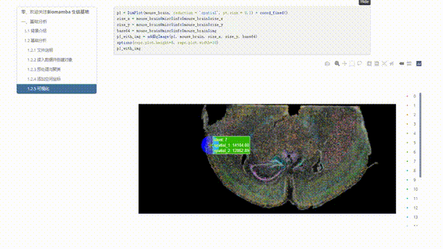
1.6marker计算与展示
与单细胞部分一样，SeekSpace的数据可以直接用单细胞的方法计算marker
# 默认标签转换为Main.CellType
Idents(mouse_brain) <- 'Main.CellType'
# 寻找每一个分类群与其他所有细胞之间的标记基因，并只显示positive结果:
mouse_markers <- FindAllMarkers(mouse_brain, only.pos = TRUE, min.pct = 0.25, logfc.threshold = 0.25)
## Calculating cluster Oligo
## Calculating cluster Ext
## Calculating cluster OPC
## Calculating cluster Inh
## Calculating cluster Astro
## Calculating cluster Micro
## Calculating cluster Endo
## Calculating cluster Nb
# 筛选出每种细胞类型top3的marker gene
library(dplyr)
top3gene <- mouse_markers %>% group_by(cluster) %>% top_n(n = 3, wt = avg_log2FC)
# 利用小提琴图进行展示：
VlnPlot(mouse_brain, features = unique(top3gene$gene),pt.size = 0,stack = T)
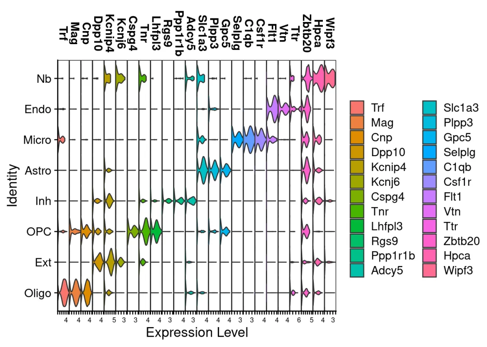
当然你也可以在原始的分群结果上查看marker
VlnPlot(mouse_brain, features = unique(top3gene$gene),pt.size = 0,stack = T,group.by = 'RNA_snn_res.0.8')
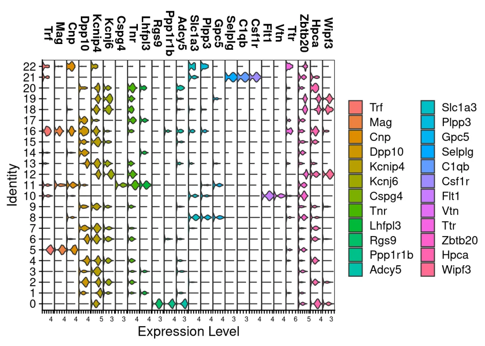
当然，空间特有的算法也可以使用，我们后面的教程会继续介绍
本教程使用的演示环境：
# 需要保证各软件版本一致才不会报错哦
sessionInfo()
## R version 4.3.1 (2023-06-16)
## Platform: x86_64-pc-linux-gnu (64-bit)
## Running under: Ubuntu 20.04.6 LTS
##
## Matrix products: default
## BLAS: /usr/lib/x86_64-linux-gnu/blas/libblas.so.3.9.0
## LAPACK: /usr/lib/x86_64-linux-gnu/lapack/liblapack.so.3.9.0
##
## locale:
## [1] LC_CTYPE=en_US.UTF-8 LC_NUMERIC=C
## [3] LC_TIME=en_US.UTF-8 LC_COLLATE=en_US.UTF-8
## [5] LC_MONETARY=en_US.UTF-8 LC_MESSAGES=en_US.UTF-8
## [7] LC_PAPER=en_US.UTF-8 LC_NAME=C
## [9] LC_ADDRESS=C LC_TELEPHONE=C
## [11] LC_MEASUREMENT=en_US.UTF-8 LC_IDENTIFICATION=C
##
## time zone: Etc/UTC
## tzcode source: system (glibc)
##
## attached base packages:
## [1] stats graphics grDevices utils datasets methods base
##
## other attached packages:
## [1] plotly_4.10.2 ggsci_2.9 mindr_1.3.2 forcats_0.5.1
## [5] stringr_1.5.0 purrr_1.0.2 readr_2.1.4 tidyr_1.3.0
## [9] tibble_3.2.1 ggplot2_3.3.6 tidyverse_1.3.1 base64enc_0.1-3
## [13] dplyr_1.1.3 SeuratObject_4.1.4 Seurat_4.4.0
##
## loaded via a namespace (and not attached):
## [1] RColorBrewer_1.1-3 rstudioapi_0.13 jsonlite_1.8.7
## [4] magrittr_2.0.3 spatstat.utils_3.0-3 farver_2.1.1
## [7] rmarkdown_2.25 fs_1.6.3 vctrs_0.6.3
## [10] ROCR_1.0-11 spatstat.explore_3.2-3 htmltools_0.5.6.1
## [13] haven_2.5.0 broom_0.8.0 cellranger_1.1.0
## [16] sass_0.4.7 sctransform_0.4.1 parallelly_1.36.0
## [19] KernSmooth_2.23-22 bslib_0.5.1 htmlwidgets_1.6.2
## [22] ica_1.0-3 plyr_1.8.9 lubridate_1.8.0
## [25] zoo_1.8-12 cachem_1.0.8 igraph_1.5.1
## [28] mime_0.12 lifecycle_1.0.3 pkgconfig_2.0.3
## [31] Matrix_1.6-1.1 R6_2.5.1 fastmap_1.1.1
## [34] fitdistrplus_1.1-11 future_1.33.0 shiny_1.7.5
## [37] digest_0.6.33 colorspace_2.1-0 patchwork_1.1.3
## [40] tensor_1.5 irlba_2.3.5.1 crosstalk_1.2.0
## [43] labeling_0.4.3 progressr_0.14.0 fansi_1.0.5
## [46] spatstat.sparse_3.0-2 httr_1.4.7 polyclip_1.10-6
## [49] abind_1.4-5 compiler_4.3.1 withr_2.5.1
## [52] backports_1.4.1 DBI_1.1.3 R.utils_2.12.2
## [55] MASS_7.3-60 tools_4.3.1 lmtest_0.9-40
## [58] httpuv_1.6.11 future.apply_1.11.0 goftest_1.2-3
## [61] R.oo_1.25.0 glue_1.6.2 nlme_3.1-163
## [64] promises_1.2.1 grid_4.3.1 Rtsne_0.16
## [67] cluster_2.1.4 reshape2_1.4.4 generics_0.1.3
## [70] gtable_0.3.4 spatstat.data_3.0-1 tzdb_0.4.0
## [73] R.methodsS3_1.8.2 data.table_1.14.8 hms_1.1.3
## [76] xml2_1.3.5 sp_2.1-0 utf8_1.2.3
## [79] spatstat.geom_3.2-5 RcppAnnoy_0.0.21 ggrepel_0.9.3
## [82] RANN_2.6.1 pillar_1.9.0 limma_3.52.2
## [85] later_1.3.1 splines_4.3.1 lattice_0.21-9
## [88] cherryblossom_0.1.0 survival_3.5-7 deldir_1.0-9
## [91] tidyselect_1.2.0 miniUI_0.1.1.1 pbapply_1.7-2
## [94] knitr_1.44 gridExtra_2.3 scattermore_1.2
## [97] airports_0.1.0 xfun_0.40 matrixStats_1.0.0
## [100] stringi_1.7.12 lazyeval_0.2.2 yaml_2.3.7
## [103] evaluate_0.22 codetools_0.2-19 cli_3.6.1
## [106] uwot_0.1.16 xtable_1.8-4 reticulate_1.32.0
## [109] munsell_0.5.0 jquerylib_0.1.4 readxl_1.4.0
## [112] modelr_0.1.8 Rcpp_1.0.11 globals_0.16.2
## [115] spatstat.random_3.1-6 dbplyr_2.3.4 png_0.1-8
## [118] parallel_4.3.1 usdata_0.2.0 ellipsis_0.3.2
## [121] reprex_2.0.1 listenv_0.9.0 viridisLite_0.4.2
## [124] scales_1.2.1 ggridges_0.5.4 crayon_1.5.2
## [127] leiden_0.4.3 openintro_2.3.0 rlang_1.1.1
## [130] rvest_1.0.2 cowplot_1.1.1
更多教程，敬请期待！
学习手册
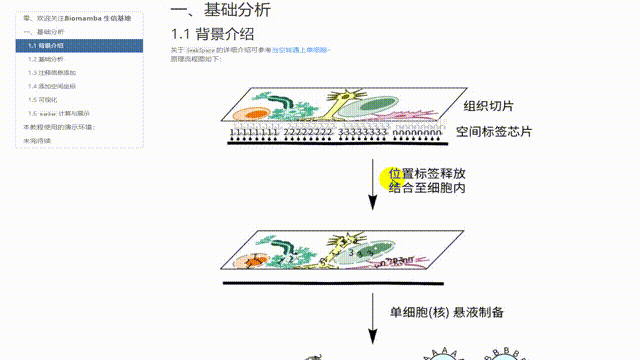
与以往的教程一样，我们给大家准备了SeekSpace数据分析的学习手册及对应测试文件，大家可以添加企业微信回复关键字"SeekSpace学习手册 "即领:
为了进一步推动单细胞科研的发展，寻因生物推出了“2024 寻因Space行知计划 ”，愿与行知者携手，一直游到海水变蓝。
该计划内容涵盖：
前1000例样本的研究助力；
2个方向：单细胞空间图谱、关键的生物学问题；
3项助力：样本投入及价格活动、送单细胞云平台免费分析

填写报名表单，参与行知计划